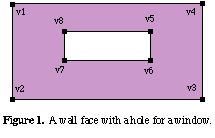
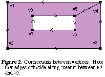

The surface orientation is determined by the right-hand rule; when the curl of the fingers follows the given order of the vertices, the surface normal points in the thumb direction. Face vertices should be coplanar, though this is difficult to guarantee in a 3-dimensional specification.
If any vertices have associated surface normals, they will be used instead of the average plane normal, though it is safest to specify either all normals or no normals, and to stick with triangles when normals are used. Also, specified normals should point in the general direction of the surface for best results.

There is no explicit representation of holes in MGF. A hole must be represented implicitly by connecting vertices to form "seams." For example, a wall with a window in it might look as shown in Figure 1. In many systems, the wall itself would be represented with the first list of vertices, (v1,v2,v3,v4) and the hole associated with that wall as a second set of vertices (v5,v6,v7,v8). In MGF, we must give the whole thing as a single polygon, connecting the vertices so as to create a "seam," as shown in Figure 2. This could be written in MGF as "f v1 v2 v3 v4 v5 v6 v7 v8 v5 v4".

It is very important that the order of the hole be opposite to the order of the outer perimeter, otherwise the polygon will be "twisted" on top of itself. Note also that the seam was traversed in both directions, once going from v4 to v5, and again returning from v5 to v4. This is a necessary condition for a proper seam.
The choice of vertices to make into a seam is somewhat arbitrary, but some rendering systems may not give sane results if you cross over a hole with part of your seam. If we had chosen to create the seam between v2 and v5 in the above example instead of v4 and v5, the seam would cross our hole and may not render correctly.
# Make a pyramid v apex = p 1 1 1 v base0 = p 0 0 0 v base1 = p 0 2 0 v base2 = p 2 2 0 v base3 = p 2 0 0 # Bottom f base0 base1 base2 base3 # Sides f base0 apex base1 f base1 apex base2 f base2 apex base3 f base3 apex base0